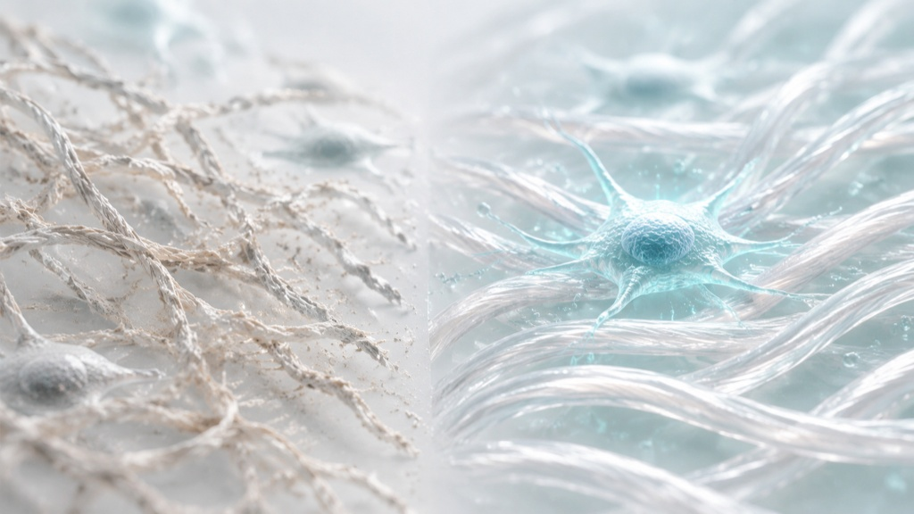

Неоколлагеногенез: биохимия, ресурсы и сроки перестройки кожи
Под неоколлагеногенезом понимают синтез и сборку нового коллагена клетками соединительной ткани. Отдельная белковая молекула и видимое уплотнение кожи формируются в совершенно разных временных масштабах: биохимические фазы нельзя делить на популярную схему «один плюс один плюс два месяца», а клинический отклик зависит от выбранного метода и исходного ресурса дермы.
Коротко о главном
- Три фазы идут параллельно. Клетка синтезирует проколлаген внутри на мембранах ЭПР, выводит его наружу для отщепления пропептидов и укладывает зрелые волокна в матриксе. Эти процессы перекрываются во времени, а не ждут друг друга по месяцам.
- Ферментам нужны точные кофакторы. Аминокислоты служат строительным субстратом, витамин C и железо поддерживают внутриклеточное гидроксилирование пролина и лизина, а медь запускает внеклеточную сшивку волокон лизилоксидазой.
- Срок 3–4 месяца отражает наблюдение за тканью. Недели и месяцы после процедуры уходят на перестройку дермальной сети, а не на сборку одной молекулы. Видимый результат не гарантирован к конкретной дате и может развиваться дольше.
- Железо и добавки не назначают «вслепую». Препараты железа принимают только при доказанном дефиците по назначению врача, а питьевой коллаген расщепляется в пищеварительном тракте и не заменяет рацион или фотозащиту.
От клеточного сигнала к матриксу
Фибробласты улавливают химические и механические сигналы из внешней среды. Когда факторы роста связываются с мембранными рецепторами, а интегрины считывают натяжение матрикса, клетка перестраивает работу генов и начинает активнее выпускать структурные белки. Сила этого ответа зависит от субпопуляции фибробластов, локального воспаления, механической опоры и кровоснабжения участка.
Чтобы процедура дала клинический результат, врач сопоставляет показания, дозирует глубину и интенсивность стимула и оценивает, способна ли ткань восстановиться. Доставлять препарат строго на границу дермы и подкожной клетчатки нужно далеко не всегда: активные фибробласты населяют и сосочковый, и сетчатый слои дермы, а доказанные наружные ретиноиды вроде третиноина запускают синтез проколлагена без инъекционного прокола. 1 2
Биохимия и тайминг: три связанные фазы

Коллагены I и III типов формируют механический каркас дермы. Чтобы из отдельных аминокислот получилось прочное волокно, белок проходит многоступенчатую сборку внутри клетки и за её пределами.
| Фаза | Клеточные и внеклеточные события | Как трактовать сроки |
|---|---|---|
| Внутриклеточный синтез | Рибосомы шероховатого ЭПР собирают альфа-цепи; пролил- и лизилгидроксилазы гидроксилируют пролин и лизин при участии витамина C и железа; после гликозилирования цепи скручиваются в тройную спираль проколлагена и проходят через комплекс Гольджи | Клетка собирает и выделяет отдельные молекулы проколлагена за часы, ей не нужен на это целый месяц |
| Внеклеточное созревание | Специфические пептидазы отщепляют концевые пропептиды вне клетки; молекулы тропоколлагена самособираются в фибриллы, а фермент лизилоксидаза при участии меди прошивает их ковалентными поперечными связями | Темп зависит от состояния ткани и ферментов; созревание идёт параллельно с выпуском новых порций проколлагена |
| Укладка и ремоделирование сети | Фибриллы объединяются в пучки и ориентируются по линиям механического натяжения; металлопротеиназы разбирают повреждённые фрагменты, уступая место упорядоченной сети | Заметные глазу перемены плотности и рельефа накапливаются неделями и месяцами и могут продолжаться дольше |
Клетка выводит наружу именно проколлаген с концевыми пропептидами, которые не дают молекулам слипаться внутри органелл раньше времени. Пропептиды отщепляются уже в межклеточном пространстве, поэтому рассказы о том, что фибробласт выбрасывает сразу готовый тропоколлаген, противоречат биохимии. Деление структур на микрофибриллы, фибриллы и пучки описывает пространственную иерархию волокна, но не диктует помесячное расписание.
Популярная в блогах формула «один месяц внутри клетки, один месяц снаружи и ещё два месяца на встраивание в каркас» не имеет отношения к реальной физиологии. График контрольных осмотров привязывают к конкретному аппаратному или инъекционному протоколу, а не к вымышленной четырёхмесячной арифметике.
Ресурсы синтеза: белок и кофакторы
| Компонент | Биологическая задача | Практический вывод |
|---|---|---|
| Аминокислоты | Служат сырьём для полипептидных цепей; треть аминокислотных остатков коллагена приходится на глицин, высока доля пролина и гидроксипролина | Рацион должен закрывать потребность в белке; ни один аппарат не построит волокно при белковом голодании |
| Витамин C | Восстанавливает железо в активном центре пролил- и лизилгидроксилаз, без чего тройная спираль проколлагена теряет термическую устойчивость | Дефицит аскорбиновой кислоты нужно восполнять, но сверхдозы поверх нормального рациона не ускорят синтез |
| Железо | Входит в каталитический центр ферментов, гидроксилирующих остатки пролина и лизина на мембранах ЭПР | Препараты железа врач назначает только при лабораторно и клинически подтверждённом дефиците |
| Медь | Активирует внеклеточный фермент лизилоксидазу, который сшивает коллагеновые и эластиновые фибриллы в прочную сеть | Биохимическая функция меди не даёт повода пить добавки с медью без диагноза |
| Кислород и клеточная энергия | Поддерживают реакции окислительного фосфорилирования и гидроксилирования в дерме | Хроническая ишемия, курение и декомпенсированные системные болезни тормозят тканевый ответ |
Витамин C работает кофактором при гидроксилировании проколлагена, а его глубокий дефицит разрушает соединительную ткань при цинге. При этом клинические наблюдения не подтверждают, что приём высоких доз витамина C у человека с полноценным питанием ускоряет ремоделирование дермы после косметологических процедур. 3
Белковое питание
Пищевой белок снабжает организм незаменимыми аминокислотами, которые клетки человека не синтезируют самостоятельно. В ежедневное меню включают рыбу, птицу, мясо, яйца, молочные продукты и бобовые с поправкой на пищевую переносимость и привычки пациента. Суточную норму белка рассчитывают индивидуально, особенно если у человека диагностированы болезни почек или нарушения обмена веществ.
Железо: цифра в таблице не равна усвоенной дозе
Справочная таблица: источники железа в рационе
| Группа продуктов | В какой форме содержится железо | Что учитывать при оценке рациона |
|---|---|---|
| Мясо, птица, рыба и субпродукты | Сочетают гемовое и негемовое железо | Концентрация сильно колеблется в зависимости от вида животного, отруба и способа термической обработки |
| Бобовые, цельные крупы, орехи, листовая зелень | Содержат негемовое железо | Фитаты и танины снижают всасывание, а витамин C в том же приёме пищи помогает усвоить больше микроэлемента |
| Яйца и молочные продукты | Животное происхождение не гарантирует высокую долю гемового железа | Нельзя приравнивать все животные продукты к красному мясу по биодоступности железа |
Справочные таблицы с миллиграммами железа на 100 граммов продукта имеют смысл только тогда, когда указано состояние сырья: сухое, сырое или отварное. Механический подсчёт цифр по разрозненным памяткам часто вводит в заблуждение. Если анализы подтверждают дефицит железа, профильный врач ищет источник кровопотери или мальабсорбции и подбирает лечебную схему, а не ограничивается советом есть больше гречки или печени. 4
Какие анализы нужны перед процедурой
Обязательного лабораторного списка «для проверки коллагена» перед каждым визитом к косметологу не существует. Врач направляет на общий анализ крови, ферритин и биохимические тесты, если пациент жалуется на слабость, выпадение волос, сухость кожи или имеет хронические заболевания в анамнезе. Ферритин показывает запасы железа в депо, но одновременно ведёт себя как белок острой фазы и растёт при любом воспалении, поэтому оценивать его изолированно нельзя. Показатель общего белка в сыворотке крови тоже долго держится в референсных границах даже при скудном рационе и не отражает тонкий аминокислотный баланс дермы.
Анемию и латентный дефицит железа обязательно лечат у терапевта или гематолога. Однако категоричные заявления о том, что ферритин ниже условной планки полностью блокирует эффект любой аппаратной или инъекционной процедуры, не опираются на строгие клинические исследования.
Питьевой коллаген и добавки
| Популярный тезис | Физиологическая реальность |
|---|---|
| «Выпитый коллаген напрямую встраивается в кожу лица» | Ферменты желудка и кишечника расщепляют любой белок до свободных аминокислот и коротких ди- и трипептидов; организм распределяет их по всем органам по текущим приоритетам, а не отправляет прицельно в скулы или лоб |
| «Гидролизованный коллаген заменяет обычную белковую еду» | В коллагене мало триптофана и ряда других незаменимых аминокислот, поэтому порошок из банки не заменит полноценный пищевой белок в рационе |
| «Обычное мясо не усвоится, нужен только пептидный гидролизат» | Здоровый желудочно-кишечный тракт штатно переваривает цельные пищевые белки; заводской гидролиз облегчает растворение порошка, но не гарантирует клинического преимущества над нормальным рационом |
| «Чем выше дозы витамина C и железа, тем плотнее станет дерма» | Избыток кофакторов сверх ферментативной потребности не ускоряет сборку матрикса, но повышает риск токсических и желудочно-кишечных осложнений |
Разбирая исследования питьевых пептидов коллагена, врач смотрит на конкретную рецептуру, размер выборки, наличие слепого контроля и методы измерения кожи. Ни одна биологически активная добавка не отменяет ежедневную защиту от ультрафиолета, лечение дерматозов и коррекцию реальных дефицитов, а обещания «безоперационного лифтинга из стакана» остаются маркетинговым преувеличением. Избыточные дозы аскорбиновой кислоты раздражают слизистую ЖКТ и требуют осторожности при склонности к оксалатным камням в почках, а бесконтрольный приём железа токсичен для печени и тканей. 3 4
Практический смысл: календарь наблюдения
| Временной отрезок | Что происходит в ткани и что видит пациент | От каких выводов лучше воздержаться |
|---|---|---|
| Первые сутки и дни | Ткань отвечает на микротравму, термический импульс или введённый гель-носитель; держатся реактивный отёк и временный приток воды | Раннюю наполненность и свежесть нельзя принимать за созревший коллагеновый каркас |
| Первые недели | Спадает первичный отёк, фибробласты активируют синтез проколлагена и протеогликанов, запускается перестройка сети | Когда отёк уходит, пациенту иногда кажется, что «эффект пропал», хотя настоящая сборка матрикса только набирает ход |
| От 2 до 4 месяцев и далее | Новые коллагеновые пучки сшиваются и укладываются по линиям натяжения; постепенно меняются плотность и микрорельеф кожи | Рубеж в 3–4 месяца служит удобной точкой врачебного контроля, но не гарантирует одинакового отклика у всех и не останавливает ремоделирование |
Дату контрольного визита врач назначает под конкретный препарат (полимолочную кислоту, гидроксиапатит кальция, коллагеновый комплекс) или аппаратный протокол (микроигольчатый RF, фокусированный ультразвук, лазерную шлифовку). Объективно сравнить ткани помогают фотоснимки в одинаковом свете и ракурсе. Курение и загар активируют матриксные металлопротеиназы, которые разрушают молодой коллаген, поэтому круглогодичная фотозащита напрямую защищает результат процедуры.
Реабилитация: норма и тревожные сигналы
| Ожидаемая реакция ткани | Симптомы, требующие немедленной связи с врачом |
|---|---|
| Умеренная чувствительность при касании, лёгкий отёк и розовая эритема в сроки, оговорённые протоколом | Пульсирующая или нарастающая боль, расползающееся горячее покраснение, подъём температуры тела, гнойное отделяемое или плотные болезненные узелки |
| Точечные следы от вколов и небольшие синяки, которые постепенно светлеют и рассасываются | Резкое побеление участка кожи, мраморный синюшный или фиолетовый сетчатый рисунок после инъекции, особенно в сочетании с болью и похолоданием ткани |
| Плавное изменение качества кожи без резких скачков в первые недели | Любое затуманивание зрения, двоение в глазах, онемение лица, нарушение речи или затруднённое дыхание требуют немедленного вызова скорой помощи |
В период восстановления кожу очищают мягкими ПАВ, наносят подобранный врачом репарант, закрывают открытые зоны санскрином и откладывают кислоты, скрабы и ретиноиды до полной эпителизации. Самостоятельно разминать лицо, ходить в сауну или наслаивать другие процедуры без согласования с лечащим косметологом опасно. Если после инъекции появился подозрительный симптом, свяжитесь с клиникой в тот же час, не дожидаясь планового осмотра. 5
Частые вопросы пациентов (FAQ)
Новый коллаген действительно строится строго три месяца?
Нет. Три или четыре месяца служат ориентиром для врачебного осмотра после ряда процедур, но не отражают время сборки одной молекулы. Фибробласт синтезирует и выводит проколлаген гораздо быстрее, а фазы внутриклеточной сборки, внеклеточного отщепления пропептидов и укладки пучков перекрываются по времени. Перестройка всего дермального каркаса занимает недели и месяцы, причём её темп зависит от методики и исходного ресурса кожи.
Нужно ли всем сдавать ферритин перед коллагеностимуляцией?
Универсального чекапа «на коллаген» не существует. Врач назначает анализы на ферритин и общий анализ крови, когда видит клинические симптомы дефицита железа, собирает соответствующий анамнез или выявляет факторы риска. Сам показатель ферритина оценивают вместе с признаками воспаления, так как этот белок повышается при острых и хронических воспалительных реакциях. Тезис о том, что низкий ферритин сам по себе обнуляет эффект любой стимуляции, клинические исследования не подтверждают.
Можно ли заранее принимать железо и витамин C без обследования?
Препараты железа нельзя пить профилактически: без подтверждённого дефицита они перегружают ткани и вызывают побочные реакции со стороны желудочно-кишечного тракта. Витамин C лучше получать из разнообразного рациона. Если питание покрывает физиологическую норму, ударные дозы аскорбиновой кислоты не заставят фибробласты работать быстрее после аппаратного прогрева или инъекций.
Почему кожа иногда выглядит плотнее и свежее уже через неделю?
В первые дни ткань реагирует на саму травму, прогрев или жидкий носитель препарата: развивается умеренный реактивный отёк, притягивается вода, выравнивается микрорельеф рогового слоя. Такой ранний визуальный отклик радует пациента, но ещё не говорит о том, что в дерме созрел новый коллагеновый каркас. Истинную перестройку матрикса оценивают спустя недели и месяцы по стандартизированным фотоснимкам.
Источники
- 1 Функциональная и молекулярная неоднородность популяций фибробластов в разных анатомических слоях дермы человека (PMC7072412).
- 2 Рандомизированное клиническое исследование наружного третиноина и динамики маркеров синтеза проколлагена (PubMed 16060712).
- 3 NIH Office of Dietary Supplements. Vitamin C: Fact Sheet for Health Professionals.
- 4 NIH Office of Dietary Supplements. Iron: Fact Sheet for Health Professionals.
- 5 U.S. Food and Drug Administration (FDA). Dermal Fillers (Soft Tissue Fillers): профиль безопасности и ранние признаки сосудистых осложнений.
Материал носит информационно-образовательный характер и не заменяет очную консультацию врача-косметолога. Процедуры подбираются индивидуально после диагностики.